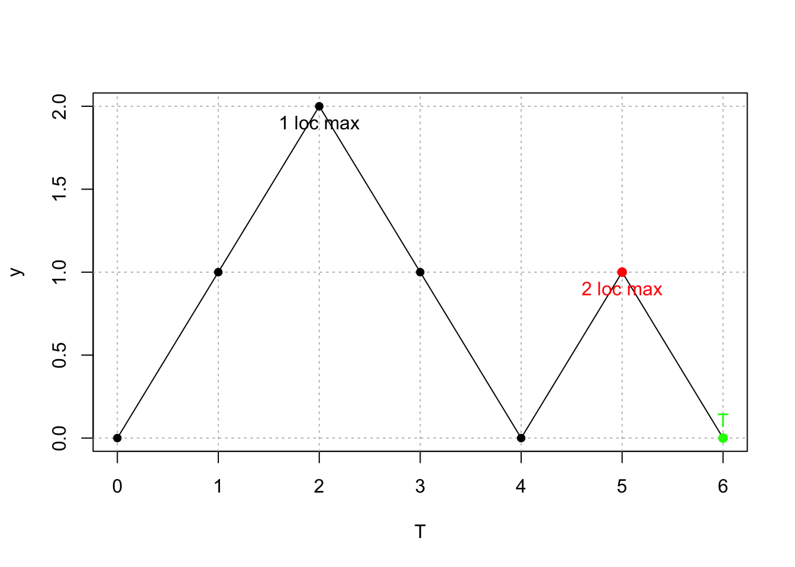

Глава 6 Решение задач по теме Сигма-алгебра
Конспект: Алиса Жильцова
дата: 30 сентября 2016 г.
6.1 7.1 Задача №1 (№ 2.35 в задачнике) {##7_1_ex1}
6.1.1 7.1.1. Условие задачи: {###7_1_ex1_1}
Монетка подкидывается бесконечное количество раз: \(X_n\) равно 1, если при n-ом подбрасывании выпадает орёл, и 0, если решка. Определим кучу \(\sigma\) - алгебр: \(\mathcal{F}_n:= \sigma(X_1, X_2, ...., X_n), \mathcal{H}_n := \sigma( X_n, X_{n+1}, X_{n+2},....).\)
Приведите по два нетривиальных (т.е. \(\Omega\) и \(\emptyset\) не называть) примера такого события A, что:
\(\bullet\) \(A\in\mathcal{F}_{2010}\);
\(\bullet\) \(A\notin\mathcal{F}_{2010}\);
\(\bullet\) A лежит в каждой \(\mathcal{H}_n\).
В какие из упомянутых \(\sigma\) - алгебр входят события:
\(\bullet\) \(X_{37} > 0\);
\(\bullet\) \(X_{37} > X_{2010}\);
\(\bullet\) \(X_{37} > X_{2010} > X_{12}\).
Упростите выражения: \(\mathcal{F}_{11}\cap\mathcal{F}_{25}, \mathcal{F}_{11}\cup \mathcal{F}_{25}, \mathcal{H}_{11}\cap\mathcal{H}_{25}, \mathcal{H}_{11}\cup \mathcal{H}_{25}.\)
6.1.2 7.1.2. Решение: {###7_1_ex1_2}
Приведём по два нетривиальных (т.е. \(\Omega\) и \(\emptyset\) не называть) примера такого события A, что:
\(\bullet\) \(A\in\mathcal{F}_{2010}\) :
Начнём с того, что \(\mathcal{F}_{2010}\) можно определить как совокупность знаний человека, который видел первые 2010 подбрасываний монетки. Тогда данную задачу можно переформулировать следующим образом: что знает Джон, видевший первые 2010 подбрасываний? Знает ли, что при четвёртом подбрасывании выпал орёл? Знает! А знает ли, что в первые 100 подбрасываний выпало не более 70 орлов? Знает! Таким образом, возможными примерами события \(A\in\mathcal{F}_{2010}\) являются события: {\(X_4=1\)} и {за первые 100 подрабрасываний выпало не более 70 орлов}.
\(\bullet\) \(A\notin\mathcal{F}_{2010}\)
На основе рассуждений из предыдущего пункта, достаточно просто привести примеры событий \(A\notin\mathcal{F}_{2010}\). Так, Джон, видевший первые 2010 событий, не знает, что в 2011-й раз выпал орёл или, выражаясь языком формул, – { \(X_{2011}=1\) }.
\(\bullet\) A лежит в каждой \(\mathcal{H}_n\)
Для того, чтобы понять, какие события лежат во всех \(\mathcal{H}_n\), попробуем для начала сформулировать хотя бы одно событие лежащее, например, в \(\mathcal{H}_{100}\).
\(\sigma\) - алгебра \(\mathcal{H}_{100}\) представляет собой совокупность знаний человека, видевшего все подбрасывания начиная с 100-го. Тогда примером события, принадлежащего данной \(\sigma\) - алгебре может быть: {во всех подбрасываниях начиная с 100-го подбрасывания выпадали только орлы}.
А какое событие лежит в \(\mathcal{H}_{1000}\) ? Например, {в 5000-ом подбрасывании выпала решка}.
Оказывается, достаточно легко привести пример события, лежащего в каком-то отдельном \(\mathcal{H_n}\). А что же тогда лежит во всех \(\mathcal{H}_n\) ? Например, будет ли лежать в такой \(\sigma\)-алгебре событие: решка выпала конечное число раз? Проверим! В \(\mathcal{H}_{100}\), например, лежит: если Джон видел все подбрасывания, начиная с 100-го,то он может однозначно определить, выпала ли решка конечное число раз. Если он увидит конечное количество решек, значит утверждение верно. А если увидит решку бесконечное количество раз, то первые 99 “неувиденных” подбрасываний никак не отразятся на “увиденной” бесконечности. То есть, первое конечное число подбрасываний никак не отразится на конечности или бесконечности числа решек во всех подбрасываниях. Рассуждая аналогичным образом, легко заметить, что такое событие лежит и в \(\mathcal{H}_{101}\), и в \(\mathcal{H}_{1000}\), и во всех остальных \(\mathcal{H}_n\).
Вывод: событие {решка выпала конечное число раз} лежит во всех \(\mathcal{H}_n\).
Попробуем привести другой пример события, лежащего во всех \(\mathcal{H}_n\) (помимо вариаций на тему предыдущего вроде : {орёл выпал конечное/бесконечное количество раз}).
Подходит ли событие {решка выпадает через раз}? Ответ: нет. Так как в данном случае первые 99 (или любое другое конечно число) неувиденных подбрасываний повлияют на результат. А вот событие {последовательность решка-орёл-решка выпадала конечное/бесконечное число раз} или {подряд два орла выпадали конечное/бесконечное число раз} лежит во всех \(\mathcal{H}_n\).
Попробуем придумать более страшный пример события, лежащего во всех \(\mathcal{H}_n\)!
Введём случайную величину \(Q_n\), обозначающую долю орлов среди первых n подбрасываний. Тогда \(Q_1\) может принимать следующие значения: 0 и 1 с вероятностью 1/2 каждое.Возможными значениями случайной величины \(Q_2\), соответсвенно, будут: 0 с вероятностью 1/4, 1/2 с вероятностью 1/2 и 1 с вероятностью 1/4. И так далее. Страшно? Это еще цветочки!
Теперь рассмотрим событие {\(\lim_{n \to \infty}Q_n\geqslant 0.51\)}, которое означает, что в пределе доля орлов была больше 0.51. Очевидно, что такое событие может как произойти, так и не произойти. Например, если выпадают все орлы, то оно произойдёт. А вот если орлы и решки чередуются, то - не произойдет.
Допустим, Джон опоздал и не видел первые 99 подбрасываний. Сможет ли он определить, произошло ли событие {\(\lim_{n \to \infty}Q_n\geqslant 0.51\)}? Ответ: да. Так как на предел первые члены последовательности не влияют. Таким образом, можем сделать вывод о том, что {\(\lim_{n \to \infty}Q_n\geqslant 0.51\)} лежит во всех \(\mathcal{H}_n\).
Важно отметить, что отдельные события {\(Q_n\)}, например, {\(Q_n=1\)} уже не будет лежать во всех \(\mathcal{H}_n\).
Теперь проделаем обратную задачу и определим, в какие из упомянутых \(\sigma\)-алгебр входят события:
\(\bullet\) \(X_{37} > 0\)
Событие \(X_{37} > 0\) означает, что в 37-м подбрасывании выпал орёл. Оно входит во все \(\mathcal{H}_i\) для всех i = 1,…,37 и во все \(\mathcal{F}_j\) для всех j = 37,…,n.
\(\bullet\) \(X_{37} > X_{2010}\)
Данное событие является чуть более сложным случаем чем первый пример. Его способен распознать Джон, если он видел и 37-е, и 2010-е подбрасывания. Такое знание соответсвует \(\sigma\) - алгебрам \(\mathcal{F}_j\) для любых j начиная с 2010 и \(\mathcal{H}_i\) для всех i = 1,…,37.
\(\bullet\) \(X_{37} > X_{2010} > X_{12}\)
А этот пример еще интереснее! В нем есть ловушка! :)
Так как любой \(X_n\) может принимать только два значения: 0 или 1, то событие {\(X_{37} > X_{2010} > X_{12}\)} невозможно! Т.е. оно эквивалетно пустому множеству! А как известно из определения, пустое множество содержится в любой \(\sigma\) - алгебре.
Отметим, что если бы вместо строгого знака неравенства был бы нестрогий, а именно :\({X_{37} > X_{2010} \geqslant X_{12}}\), то такое событие входило бы во все \(\mathcal{F}_j\) для j начиная с 2010 и \(\mathcal{H}_i\) для всех i = 1,…,37.
P.s. Если случайно забыл(а) определение \(\sigma\)-алгебры событий, то его можно подсмотреть в главе 4
Упростим следующие выражения:
\(\bullet\) \(\mathcal{F}_{11}\cap\mathcal{F}_{25}\)
Сигма-алгебре \(\mathcal{F}_{11}\) соответствуют знания Джона, который видел все подбрасывания монетки с 1 по 11. А сигма алгебре \(\mathcal{F}_{25}\) соответсвуют знания человека, который видел все подбрасывания монетки с 1 по 25. Тогда пересечением этих двух сигма-алгебр или, другими словами, информацией, которой обладает Джон, видевший подбрасывания и с 1 по 11, и с 1 по 25, будет \(\mathcal{F}_{11}\).
Другое объяснение: пересечение двух множеств равно меньшему из этих множеств. В данном случае в \(\mathcal{F}_{25}\) лежит больше событий чем в \(\mathcal{F}_{11}\). Поэтому \(\mathcal{F}_{11}\cap\mathcal{F}_{25} = \mathcal{F}_{11}\).
\(\bullet\) \(\mathcal{F}_{11}\cup \mathcal{F}_{25}\)
Данный пример очень похож на предыдущий за исключением того, что здесь спрашивается объединение данных сигма-алгебр или знания, которыми обладает Джон, видевший либо с 1 по 11 подбрасывания, либо с 1 по 25. Такой сигма-алгеброй будет – \(\mathcal{F}_{25}\).
\(\bullet\) \(\mathcal{H}_{11}\cap\mathcal{H}_{25}\)
В \(\mathcal{H}_{11}\) лежит больше событий чем в \(\mathcal{H}_{25}\) или \(\mathcal{H}_{11}\supset{H}_{25}\) (т.к. в \(\mathcal{H}_{11}\) входят все подбрасывания монетки с 11 до n, а в \(\mathcal{H}_{25}\) - с 25 до n). Тогда, основываясь на приведенных в предыдущих двух пунктах рассуждениях, получим: \(\mathcal{H}_{11}\cap\mathcal{H}_{25}\) = \(\mathcal{H}_{25}\).
\(\bullet\) \(\mathcal{H}_{11}\cup\mathcal{H}_{25}\)
Аналогично предыдущим пунктам получим: \(\mathcal{H}_{11}\cup \mathcal{H}_{25}=\mathcal{H}_{11}\)
6.2 7.2 Задача №2 Про Агента 007 (№ 2.43 в задачнике) {##7_2_ex2}

Джеймс Бонд
6.2.1 7.2.1 Условие задачи {###7_2_ex2_1}
Сейчас либо солнечно, либо дождь, либо пасмурно без дождя. Соответственно множество \(\Omega\) состоит из трёх исходов, \(\Omega\) = {солнечно, дождь, пасмурно}. Джеймс Бонд пойман и привязан к стулу с завязанными глазами, но он может на слух отличать, идет ли дождь.
Как выглядит \(\sigma\) - алгебра событий, которые различает агент 007?
Как выглядит минимальная \(\sigma\) - алгебра, содержащая событие A={}?
Сколько различных \(\sigma\) - алгебр можно придумать для данного \(\Omega\) ?
6.2.2 7.2.2 Решение задачи {###7_2_ex2_2}
- Как выглядит \(\sigma\)-алгебра событий, которые различает агент 007?
Введём случайную величину Z, означающую то, что различает Джеймс Бонд. Другими словами, зная Z Джеймс Бонд с легкостью сможет сказать, идёт сейчас дождь или нет. Но он не отличает события {солнечно} и {пасмурно}.
Оформим возможные значения Z в виде таблицы:
| \(\Omega\) | Солнечно | Дождь | Пасмурно |
|---|---|---|---|
| Z | 0 | 1 | 0 |
\(\sigma\)(Z) - то, что различает Джеймс Бонд.
Тогда \(\sigma\)(Z) = {дождь, {солнечно,пасмурно} , \(\Omega\), \(\emptyset\)}
- Как выглядит минимальная \(\sigma\)-алгебра, содержащая событие A={}?
(прим. {} - пустое множество)
Минимальная \(\sigma\)-алгебра, содержащая событие A={} выглядит следующим образом:
\(\sigma\)(A) = {\(\Omega\), \(\emptyset\)}
На бытовом языке такую сигма-алгебру можем описать как список событий, который различает Джеймс Бонд, если бы ему завязали глаза и заткнули бы уши (печально!), т.е. если бы он не знал ничего.
Отметим, что каким бы не было \(\Omega\), всегда есть самая “бедная” сигма - алгебра на нём, содержащая только само \(\Omega\) и пустое множество.
- Сколько различных \(\sigma\) - алгебр можно придумать для данного \(\Omega\) ?
У нас уже есть две сигма - алгебры. Нужно перебрать все возможные варианты. В данном случае это вполне реально, т.к. здесь таких сигма - алгебр будет не так много.
Изобразим такие сигма-алгебры графически:

Ответ: таких сигма-алгебр существует всего 5!
6.3 7.3 Задача №3 (2.39 в задачнике) {##7_3_ex3}
6.3.1 7.3.1 Условие задачи (перевод) {###7_3_ex3_1}
Пусть \(S_n\) - симметричное случайное блуждание, т.е. \(S_n = X_1 +X_2 +....+X_n\), где \(X_n\) - независимые и имеющие одинаковое распределение с \(P(X_n=1) = P(X_n=-1) = 0.5\). Пусть T - это момент второго локального максимума плюс один ( прим. следующий момент после момента наступления второго локального максимума). Например, если последовательность \(X_n\) задана следующим образом: +1, +1, -1, -1, -1, +1, -1, -1, +1,…, то T=7. Определим следующие сигма - алгебры: \(\mathcal{F}_n:=\sigma(X_1, X_2, ..., X_n)\) и \(\mathcal{F}_T\) – список тех событий, которые способен различить рациональный агент, знающий все \(X_i\) до момента T.
Приведите пример такого события \(A\), что \(A\notin\mathcal{F}_T\), но \(A\in\mathcal{F}_{2010}\);
Приведите пример такого события \(A\), что \(A\in\mathcal{F}_T\), но \(A\notin\mathcal{F}_{2010}\);
Докажите, что \(\mathcal{F}_T\) отличается от всех \(\mathcal{F}_n\).
6.3.2 7.3.2 Решение задачи ###{7_3_ex3_2}
Прежде чем приступить к решению следует сразу разобраться в условии задачи. Выделим некоторые ключевые моменты, необходимые для понимания:
\(\bullet\) Первый момент не может являться локальным максимумом. В нашей последовательности \(X_0\) отсутствует, а значит, первый момент не берется в рассмотрение!
\(\bullet\) Для того, чтобы лучше понять, что же такое T, приведем пример с помощью картинки для последовательности (+1,+1,-1,-1,+1,-1):
xx<-c(0,1,2,3,4,5,6)
yy<-c(0,1,2,1,0,1,0)
plot(xx, yy, type = 'l', xlab = "T", ylab = "y", xaxt = "l", yaxt = "l")
abline(h = 0:2, v = 0:6, lty = 3, col = "gray")
points(c(0,1,2,3,4), c(0,1,2,1,0), pch = 16 )
points(5,1, pch = 19, col = "red")
points(6,0, pch = 19, col = "green")
text(6,0, labels = "T", col ="green", pos = 3)
text(2,2, labels = "1 loc max", pos = 1)
text(5,1, labels = "2 loc max", pos = 1, col = "red")
На графике видим, что вторым локальным максимумом является точка (5,1), а момент T равен 6.
\(\bullet\) \(\mathcal{F}_T\) – это не то же самое, что \(\sigma(T)\)! Согласно условию задачи \(\mathcal{F}_T\) – это все события, которые может различить рациональный агент, знающий все \(X_i\) до момента T.
Интуитивно это можно представить так: Джон играет с ребятами, а в момент времени Т его зовёт бабушка Йоко. Что знает Джон? Он знает всё, что было до момента времени Т включительно, а что было после, он уже не видел. Что он может знать? Он знает, чему равно T.
\(\bullet\) \(\mathcal{F}_T\not=\mathcal{F}_5\)! \(\mathcal{F}_5\) – всё, что знает персонаж, видевший первые пять \(X_n\). \(\mathcal{F}_T\) – совокупность знаний Джона, который видел первые Т \(X_n\). Т - неопределенно! – это случайное значение. НО! \(\mathcal{F}_T\) – это одна конкретная сигма-алгебра, определенный список событий, он не случаен! Его размер определяется не случайно!
Приведем пример событий, которые входят и не входят в \(\mathcal{F}_5\). {\(X_6=1\)} - не входит в \(\mathcal{F}_5\), а вот {\(X_3=X_4\)} - входит.
Теперь приведем примеры событий, которые входят и не входят в \(\mathcal{F}_T\).{ \(X_6=1\) } или { \(X_3=X_4\) } не входят в \(\mathcal{F}_T\). {\(X_{T-3}=1\)} - входит в \(\mathcal{F}_T\): Джон “тусил” до момента Т и знает то, что было за три дня до того, как его позвала бабушка Йоко. Событие {\(X_{T-2}=X_{T-3}\)} так же входит в \(\mathcal{F}_T\). Кроме того, сюда же входит событие {T=5}: Джон видел все \(X_n\), посчитает их и скажет, чему равно T.
Теперь, детально разобрав условие задачи, ответим на следующие вопросы.
- Приведите пример такого события \(A\), что \(A\notin\mathcal{F}_T\), но \(A\in\mathcal{F}_{2010}\)
{T=5} – событие, лежащее и в \(\mathcal{F}_T\), и в \(\mathcal{F}_{2010}\).
{\(X_6=1\)} – лежит в \(\mathcal{F}_{2010}\), но не лежит в \(\mathcal{F}_T\).
- Приведите пример такого события \(A\), что \(A\in\mathcal{F}_T\), но \(A\notin\mathcal{F}_{2010}\)
{T=2040} – лежит в \(\mathcal{F}_T\) (Джон знает, чему равно Т), но не лежит в \(\mathcal{F}_{2010}\) (Джон видел первые 2010 \(X_n\), но не знает чему равно Т.)
- Докажите, что \(\mathcal{F}_T\) отличается от всех \(\mathcal{F}_n\).
\(\mathcal{F}_T\) и \(\mathcal{F}_{2010}\) не совпадают (см. предыдущий пункт). По аналогичным причинам \(\mathcal{F}_T\) не совпадает с \(\mathcal{F}_{2015}\) и так будет для любого другого n.
Вопрос на засыпку: как соотносятся между собой \(\mathcal{F}_T\) и \(\sigma(T)\)?
\(\mathcal{F}_T\) будет больше чем \(\sigma(T)\). Т.к. \(\mathcal{F}_T\) – вся первичная информация (все \(X_n\) ), а \(\sigma(T)\) – информация, посчитанная на основе первичной (T). Например, в \(\sigma(T)\) входит событие {T>7}. А вот событие \(A\) = {момент первого локального максимума < 9} лежит в \(\mathcal{F}_T\), а в \(\sigma(T)\) – нет.
Внимание! Ловушка! Что не так в следующем рассуждении? При Т=4 \(\mathcal{F}_T\)=\(\sigma(T)\), так как последовательность удовлетворяющая условию T=4 определяется однозначно: (1,-1,1,-1). И зная такую последовательность можно легко определить, что Т=4.
Рассуждение выглядит вполне логичным. Но! \(\sigma(T)\) - это список НЕ случайных событий, который НЕ зависит от Т. Нельзя сказать, что при T=5 \(\sigma(T)\) – это один список, а при \(\sigma(T)\) – другой.То есть сама формулировка “При Т=4 \(\mathcal{F}_T\)=\(\sigma(T)\)” не верна!
Однако интересно, что события {T=4} и {\(X_1=1,X_2=-1,X_3=1,X_4=-1\)} равнозначны и лежат и в \(\sigma(T)\), и в \(\mathcal{F}_T\).

А вот и тот самый Джон :)